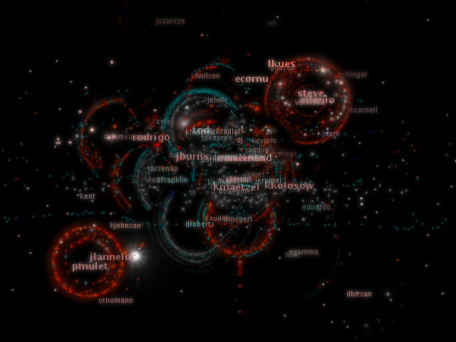
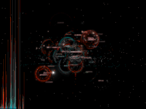
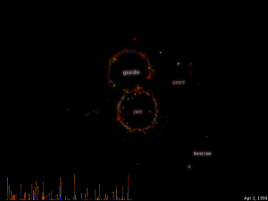
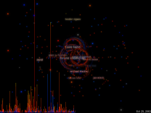
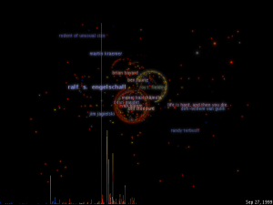

An experiment in organic software visualization.
A moment from the Eclipse project. [video]
I've been studying software projects for a while now. Not the programming, but the people -- the way they interact with each other through collaboration and communication. My investigations have always been visual: I've built applications that create pictures of what is happening within software projects. But they have always had a rigid structure to them. Organic information visualization, coined by Ben Fry, is a different approach to information visualization. It eschews traditional data confinement in space and lets the elements play together in freeform and unpredictable ways.
This visualization, called code_swarm, shows the history of commits in a software project. A commit happens when a developer makes changes to the code or documents and transfers them into the central project repository. Both developers and files are represented as moving elements. When a developer commits a file, it lights up and flies towards that developer. Files are colored according to their purpose, such as whether they are source code or a document. If files or developers have not been active for a while, they will fade away. A histogram at the bottom keeps a reminder of what has come before.
Please have a look at the videos below. Each one shows a particular software project's evolution. The videos also contain some background information on the projects. The links will take you to Vimeo pages, where a low-quality version can be streamed and viewed in your browser. On those pages, towards the bottom-right, there are also links to download the full quality version of the video.
|  |
The open source integrated development environment. |
|  |
The open source scripting language. This is the best starting point. |
|  |
The open source database management system. |
|  |
The open source webserver. |
The code is open source and available at http://code.google.com/p/codeswarm.
Created by Michael Ogawa with Processing.
Thanks to Premkumar Devanbu, Christian Bird and Alex Gourley for gathering the data.